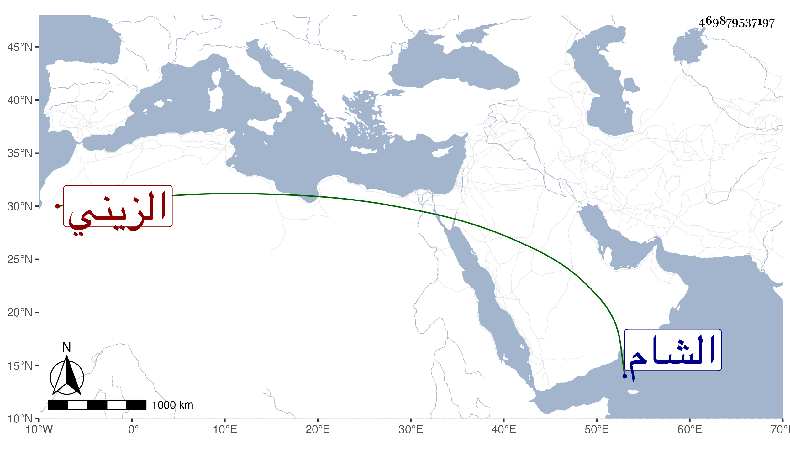

0902Sakhawi.DawLamic.ITO20230111-ara1.EIS1600.469879537197
Biography ID: 469879537197
441
عمر بن يونس بن عمر بن جربعا الزيني الآتي أبوه والماضي جده . شاب حسن الشكالة كتب الخط الحسن وتردد إليه الزين قاسم الحنفي لإقرائه وأعانه على تفسير سورة الكهف واختص به الشهاب أحمد بن العز السنباطي كثيرا ، وأرسله الأشرف قايتباي إلى الشام في بعض الأشغال الخصوصية كانت له بأبيه ، وسيرته ذميمة وفاقته متجددة ثم صاهره التقي بن الزيتوني على ابنته وشبه الشيء منجذب إليه .
